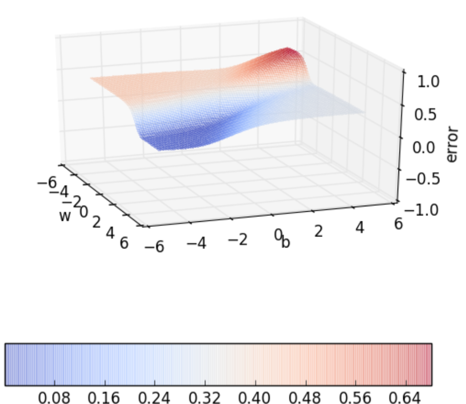
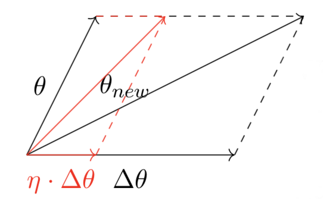

優化器 <<
Previous Next >> Stochastic gradient descent
Gradient Descent Optimizer
(資料來源)

圖1. Error_surface(圖片來源)
藉由梯度下降將目標函數值最小化，目標函數以loss function L(θ)為例，θ為weight(w) 和 bias(b) 的向量函數，為了找到error surface[圖1]上的最小值，因此加上∆θ 將θ的方向修正並引導到正確方向，避免每次修正的過多導致錯過最小值，利用係數η(學習率)縮放∆θ的修正量[圖2]，修正後方程式為：
θ = θ + η·∆θ

圖2. Theta_vector(圖片來源)
將θ以泰勒展開式表示，假設並∆θ為u:
▽L(θ) = [∂L(θ)/∂w , ∂L(θ)/∂b]
L(θ+ηu) = L(θ) + ηuT·▽θL(θ) + (η2/2!)uT·▽2L(θ)u + (η3/3!) ... + (η4/4!) ... + (ηn/n!)...
以泰勒展開式的型式表示的好處是： θ 些微的更動產生新值。η 值通常小於一，當 η2 << 1，因此可以忽略高階項
L(θ+ηu) = L(θ) + ηuT · ▽θL(θ) [η is typically small, so η2 , η3 , · · · → 0]
新的 L(θ + ηu) 輸出的值會小於 L(θ) L(θ+ηu) − L(θ) < 0，同理可證 uT·▽θL(θ) < 0，符合u這條件：當新的值小於舊的值，u就是一個好的值。假設u和▽θL(θ) 的夾角為β
cos(β) = uT·▽θL(θ)|uT||▽θL(θ)|
因為 cos(θ) 的值介於 1 和-1 之間
−1 < cos(β) = uT·▽θL(θ) |uT||▽θ L(θ)| ≤ 1
k = |uT||▽θ L(θ)| −k ≤ k cos(β) = uT·▽θL(θ) ≤ k
所以盡可能的讓新值小於舊值 (L(θ+ηu) − L(θ) < 0)，loss 值就會減少得越多。因此 u T · ▽θL(θ) 應該為負，在 這情況下 cos(β) 等於 −1，β 的角度為 180◦，這就是θ移動的方向與梯度方向相反的原因。 梯度下降法告訴我們：當 θ 在特定值，並想減少新的 θ 值，使 loss 值逐漸減少就應該與梯度相反的方向找 (若梯度為正值，找最小值就需往負的方向找)
wt=1 = wt − η▽wt
bt=1 = bt − η▽bt
where at w = wt, b = bt
wt = ∂L(θ)/∂w；▽bt = ∂L(θ)/∂b
優化器 <<
Previous Next >> Stochastic gradient descent